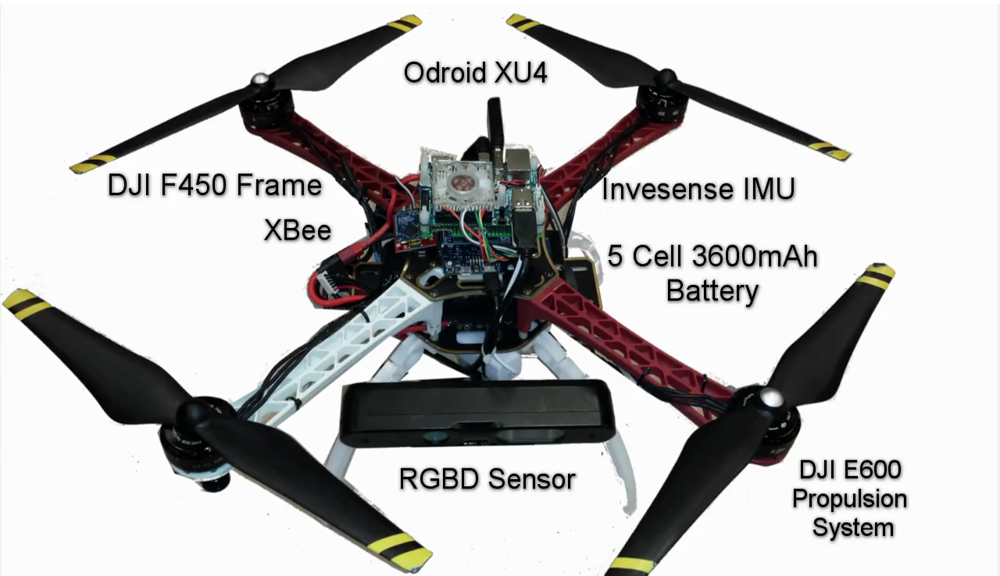
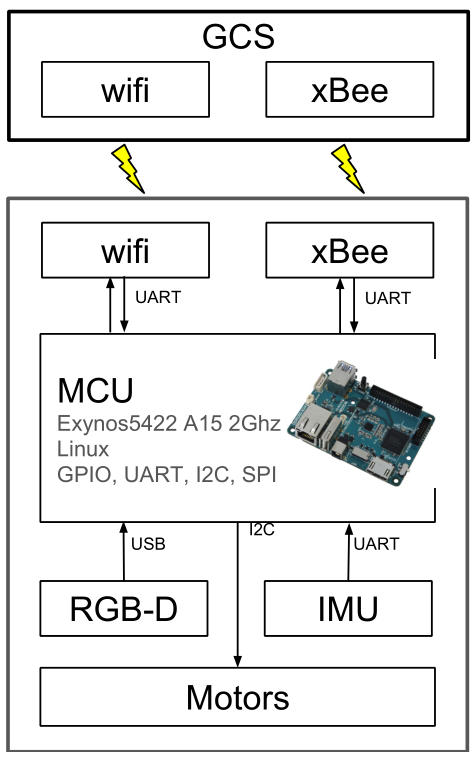

Hardware description

The quadrotor
The quadrotor UAV was developed at the
GRASP laboratory, University of Pennsylvania. It is a highly
modular quadrotor whose components are all available for
public purchase. The odroid XU4 is used
as an onboard computing unit that communicates with the
motors, IMU, RGBD sensor, xBee and wifi via i2c, UART,
UART, USB, respectively.
Linear acceleration and angular velocity are directly mea-
sured by an inertial sensor and the attitude is estimated at
200Hz based on those measurements. Position and linear
velocity are estimated by the visual state estimation at 30Hz.

Onboard Computer
The whole system is running on
an Odroid XU4 single board computer featuring an octacore
processor clocked at 2Ghz and a weight of 40gram. The on-
board computer is able to manage data acquisition from the
depth camera, real time visual odometry, obstacle discretiza-
tion and navigation, all while stabilizing the quadrotor’s
attitude. Our system uses ROS as middleware, allowing
communication between each software. This architecture
gives us the flexibility to add or modify the single devices
whilst the communication interface remains consistent.
Vision Sensor
The Asus Xtion PRO Live is an active stereo camera capable of capturing both
RGB
and Depth
images. The stereo pair consists of an IR light source and an IR
receiving camera. The light source projects a
fixed pattern onto the scene that is visible in the image captured by the
camera.
One of the drawbacks of the IR emitter/receiver setup
is the sensitivity to other IR light sources like
sunlight, making it unsuitable for outdoor use.
Although, for indoor use, this kind of sensor relieves the main CPU from depth
stimation computation, which a regular stereo camera would require.
The Asus Xtion is capable of providing 320x240 pixels RGBD registered images at
a
maximum frame rate of 30hz.
The Asus Xtion weights, in factory condition, is 170 grams and does not require
an
external power supply.